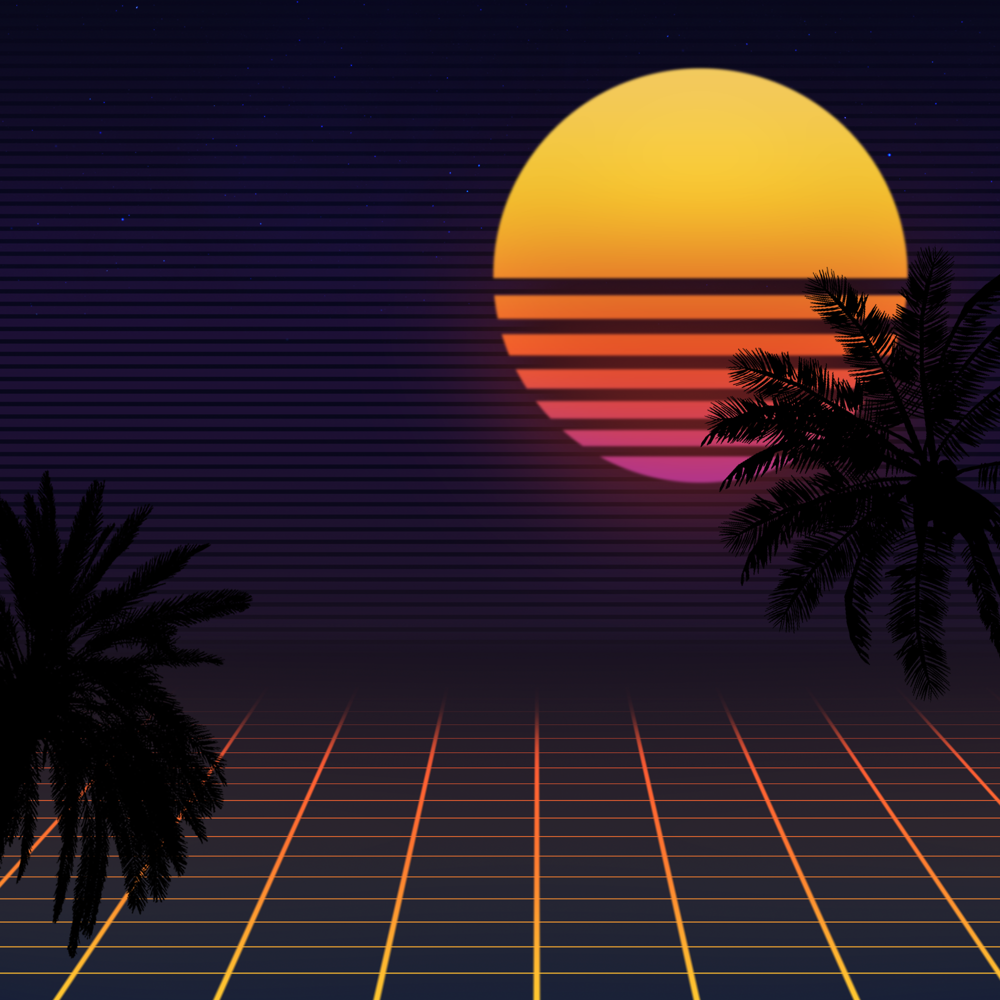
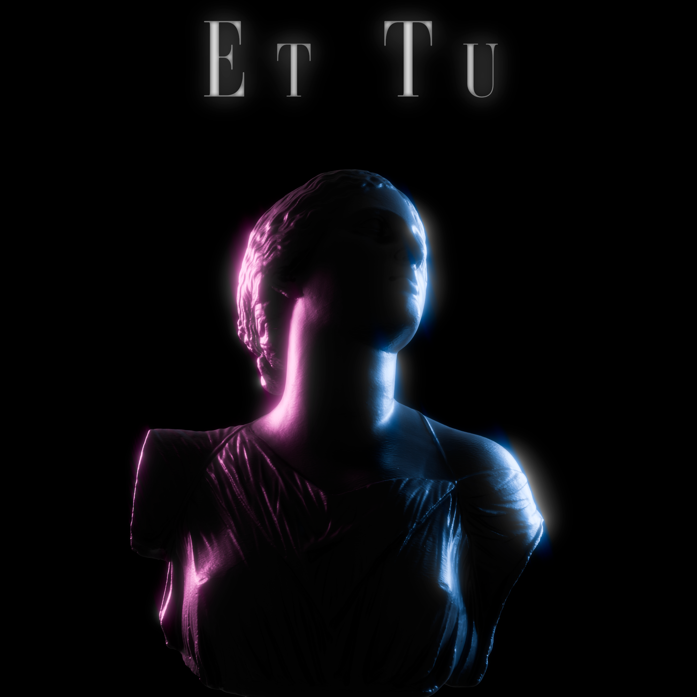

OutRun
Out Run (OutRun) is a racing game developed by SEGA back in the mid 80s and released in 1986. Outrun is a genre of music and visual aesthetic inspired by the game's musical score and visual theme. Many of today's Retrowave aesthetics can be traced back to Out Run and its unique visual style. A noteable musician that goes by Kavinsky released the 2013 album "OutRun" after the game.
Retrowave
Retrowave, often associated with and called "Synthwave" is an artistic and musical subgenre of Outrun. This subgenre is one of the most popular and most recognizeable subgenres. With focuses on heavy use of neon lights, synthesizer based tracks, and everything 80s, it is hard to glance over. This subgenre is home to the iconic grid which was popularized by Tron.
Vaporwave
Vaporwave is another popular subgenre of Outrun. The subgenre started off as an ironic play on chillwave but instead became it's own style and has since grown in popularity. However, the art direction and style of Vaporwave is kind of all over the place. The word is interchanged more with Retrowave rather than the actually being in the style of Vaporwave. This style is usually used as a melancholic look back in time. Artistically, Vaporwave uses a lot of 80s and 90s consumer marketing/advertising while the music generally uses samples from songs to exaggerate the melancholy feeling. Some of the iconicongraphy of Vaporwave include Greek busts, popculture references such as advertising, and corporate busniess culture such as the World Trade Center before 2001.
